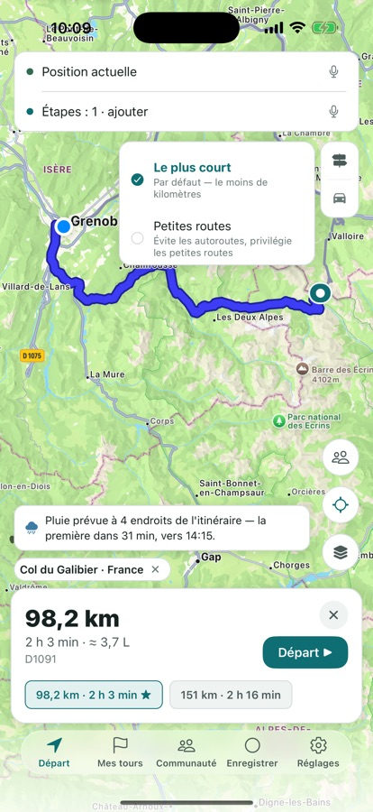
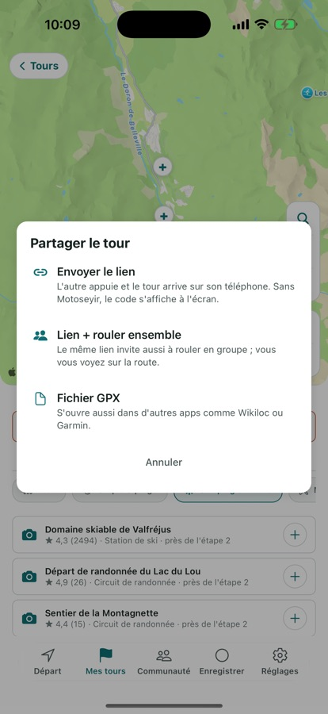
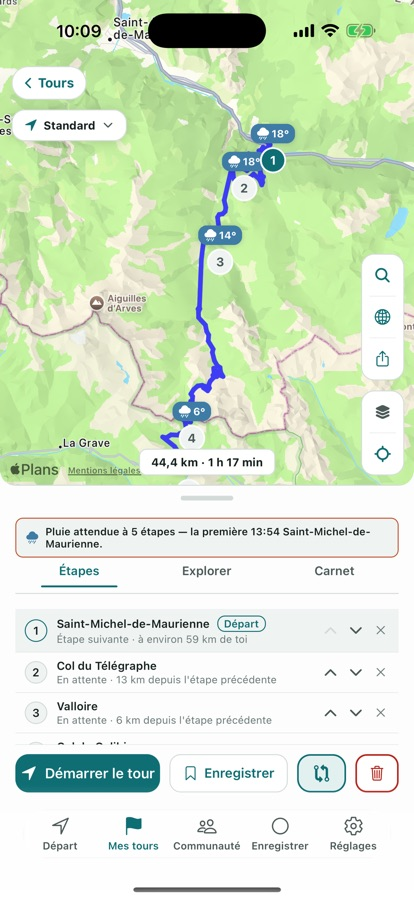
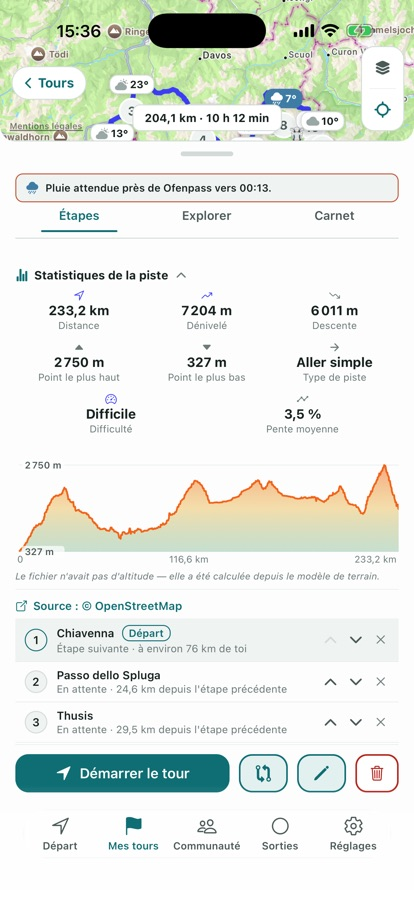
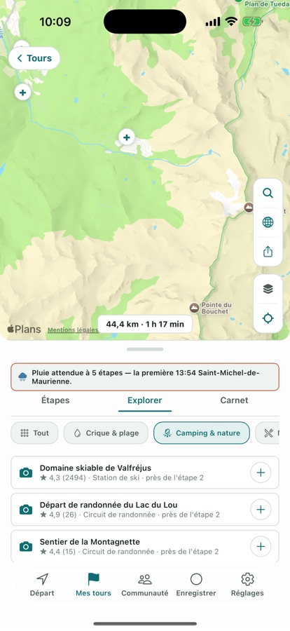

Motoseyir calcule l’itinéraire sur la distance, pas sur les minutes. Entre les deux mêmes points, elle compare plusieurs variantes et propose la plus courte. Sur un tour à plusieurs étapes, c’est elle aussi qui met les arrêts dans le bon ordre.
Tout est ouvert pendant 7 jours après l’installation. Ensuite, 3 itinéraires par jour restent gratuits.
Pourquoi c’est différent
Les autres navigations trouvent la route la plus rapide. Motoseyir trouve la plus courte.
Un itinéraire calculé pour une voiture fait toujours la même erreur à moto : il gagne des minutes et ajoute des kilomètres. Toi, tu remontes la circulation, donc cet écart est réel — plus d’essence, plus d’usure de pneus. Motoseyir compare les variantes et propose la plus courte, même si elle prend quelques minutes de plus.
Fonctions
Une appli pour tout ce que fait un motard
Itinéraire, tour, sortie et rouler ensemble — quatre parties, une seule appli. Les captures ci-dessous viennent de l’appli elle-même.
Itinéraire
Itinéraire le plus court
L’appli calcule plusieurs variantes entre les deux mêmes points et propose celle dont la distance est la plus courte — même si elle prend un peu plus de temps. La formule gratuite donne 3 calculs d’itinéraire par jour ; avec l’abonnement, la limite disparaît.
Modes de tour
Petites routes et mode Côte
En mode Petites routes, l’itinéraire est calculé sur notre propre serveur, qui emprunte aussi les petites routes qu’une carte classique ignore. D’Ayder à Hemşin, cela donne 24,1 km ; les cartes générales affichent 49,9 km entre les deux mêmes points. Le mode Côte utilise le même serveur pour garder l’itinéraire le long du littoral.

Plusieurs étapes · Courier Pro
Le meilleur ordre pour tes arrêts
Tu saisis les points de livraison dans l’ordre que tu veux, et « Meilleur ordre » les réorganise pour la distance totale la plus courte. L’exemple ci-dessous vient d’une sortie réelle : les mêmes quatre arrêts, 57,1 km dans ton ordre, 46,9 km dans celui trouvé par l’appli.
Ton ordre — 57,1 kmL’ordre de Motoseyir — 46,9 km
Itinéraires légendaires
Des itinéraires légendaires prêts à rouler
Des cols alpins comme le Stelvio et la Sellaronda sont prêts, avec des classiques turcs comme Şile–Ağva et la D400 lycienne, et sept américains, Tail of the Dragon et Big Sur compris. Tu en ouvres un dans la liste et il entre directement dans tes tours, avec ses étapes et son tracé.
Rouler ensemble
Sortie en groupe, invitation à rouler et intercom
Quand quelqu’un crée un groupe, un seul code est généré ; tout le monde le rejoint avec ce code et se voit sur l’itinéraire. Dans Mon groupe, « Inviter à rouler » à côté d’un ami envoie ton itinéraire et une liaison vocale en un appui ; il répond par « Rouler le même itinéraire » ou « Je roule derrière toi ».
L’intercom démarre aussi sans itinéraire. Le volume de chaque ami se règle séparément et les casques Bluetooth se connectent directement. Rien n’est enregistré : le son ne part qu’à ceux qui sont dans le salon à cet instant, et le salon se ferme à la fin de la sortie.

Mes tours
Carnet de tour
À chaque étape, tu prends une photo et laisses une courte note, et les deux restent sous cette étape. Les photos apparaissent aussi en cartes sur la carte du tour ; touche-les pour les ouvrir en plein écran. Le carnet reste sur ton téléphone ; si tu choisis de le partager dans la Communauté, trois photos au maximum partent avec.
Météo
Alerte pluie sur l’itinéraire
Si de la pluie est attendue sur ton itinéraire, l’appli prévient à l’avance, pour l’heure à laquelle tu y seras vraiment. Si le temps est sec, rien ne s’affiche.

Mes sorties
Enregistrement de sortie et pistes
L’enregistrement continue écran éteint et la trace se colore selon la vitesse. Une sortie terminée peut partir vers ton groupe : la trace, la distance et le temps y restent 14 jours. Pour une piste importée en GPX, l’appli calcule la distance, le dénivelé total et la pente la plus raide ; quand tu glisses le doigt sur le profil, le point se déplace sur la carte.

Explorer
Explorer
L’appli liste les criques, campings et adresses pour manger autour de ton itinéraire. Tu regardes la note et la distance à ton tracé, puis tu ajoutes celui qui te plaît comme étape.

Aussi dans l’appli
Coût du carburant
Tu vois le coût estimé du carburant avant de partir. Le calcul se fait en litres aux 100 km, et en miles par gallon (mpg) aux États-Unis.
Guidage vocal
Les instructions sont dites par la voix de ton téléphone, dans la langue de l’appli ; en turc, elles viennent d’une voix humaine enregistrée. La distance suit ta région — aux États-Unis, « dans 500 pieds, tourne à droite ».
Fil de la Communauté
Les tours que tu partages apparaissent dans le fil avec ton pseudo et ton icône, et peuvent être likés et commentés. Les publications passent par une validation avant d’être visibles. Environ 400 mètres près de ton départ et de ton arrivée sont rognés avant tout partage.
Mode paysage
Passe le téléphone en paysage et la carte, les cartes et les boutons changent de disposition : en navigation, les cartes de virage et d’arrivée à gauche, la carte à droite ; Mes tours passe sur deux colonnes.
Icônes de motard
Tu choisis ton icône sur la carte dans la grille des réglages : moto, chopper, maxi-scooter, touring, flèche ou casque. Sur les trois ajoutées à la dernière mise à jour, le pilote est là aussi.
Bientôt : AI CoRider — un compagnon de route à qui tu parles depuis ton casque. Pas encore dans la version de l’App Store ; il arrivera dans Pro lors d’une prochaine mise à jour.
Pas besoin de compte. Tout est ouvert pendant 7 jours après l’installation ; ensuite la formule gratuite continue avec 3 itinéraires par jour et 1 tour enregistré.
Gratuit
Dès l’installation, sans limite de durée.
3 calculs d’itinéraire par jour
1 tour enregistré
Navigation pas à pas avec guidage vocal
Alerte pluie sur l’itinéraire
Rejoindre un groupe par invitation ou par code
Motoseyir Pro
Les prix varient selon la région ; tu vois le tien sur l’écran d’abonnement dans l’App Store.
Itinéraires illimités
Meilleur ordre pour plusieurs étapes
Tours et pistes illimités
Modes Petites routes, Côte et Enduro
Suggestions Explorer autour de l’itinéraire
Création de groupes et intercom
Tes données
Pas de compte, pas de données inutiles
Pour utiliser Motoseyir, tu n’as pas à donner de nom, d’e-mail ni de téléphone. Voici un résumé de la politique de confidentialité ; la version complète est en français dans l’appli, sous Réglages → Politique de confidentialité.
Tu n’as pas besoin de créer un compte — nous ne demandons ni nom, ni e-mail, ni téléphone, ni date de naissance.
Pour calculer ton itinéraire, ta position et tes recherches ne sont transmises qu’aux services de cartographie ; aucun ne les conserve.
Tes tours, tes enregistrements de sortie, tes notes de carnet et tes photos restent uniquement sur ton appareil — sauf si tu les partages dans la Communauté.
Pour empêcher l’abus des périodes d’essai et des campagnes, une empreinte d’identité anonyme et irréversible de ton appareil est envoyée à notre serveur ; cette empreinte ne t’identifie pas.
Si tu actives la sortie en groupe, ta dernière position n’est partagée que pendant la sortie et elle est supprimée à la fin. Le son de l’intercom n’est jamais enregistré, il est seulement transmis aux personnes présentes.
Aucune publicité ; aucune donnée n’est partagée avec un réseau publicitaire.
Chaque grosse mise à jour est ici, la plus récente en haut.
1.1.0Septembre 2026
Mode paysage : tourne le téléphone et la carte, les cartes et les boutons passent à une nouvelle disposition. En navigation, les cartes de virage et d’arrivée sont à gauche, la carte à droite ; Mes tours affiche deux colonnes.
Intercom de groupe : dans Mon groupe, « Inviter à rouler » à côté d’une personne envoie ton itinéraire et une liaison vocale en un appui. L’intercom démarre aussi sans itinéraire, le volume de chaque ami se règle séparément et les casques Bluetooth se connectent désormais directement.
Enregistrement de sortie vers le groupe : envoie une sortie terminée à ton groupe. Trace, distance et temps y restent 14 jours ; les environs de ton départ et de ton arrivée restent masqués.
Trois nouvelles icônes de motard — chopper, maxi-scooter, touring — et une nouvelle page d’aide dans l’appli : Réglages → Comment faire ?
Les publications de la Communauté sont validées avant d’être visibles ; tu peux agrandir la carte sur une publication et les photos du carnet apparaissent en cartes sur la carte.
Annonces de virage réenregistrées, plus naturelles. Le code MOTOSEYIR7 dans les réglages débloque cinq jours de Pro, une seule fois sur cet appareil.
1.0.7Septembre 2026
Rejoindre un groupe par invitation ou par code est désormais gratuit ; en créer un reste dans Pro. Le lien d’invitation ouvre directement l’appli.
Le carnet de tour photographie maintenant avec son propre appareil, et tu peux envoyer la photo de couverture directement dans ta story Instagram.
L’unité vient de l’endroit où tu es : miles, mph et pieds aux États-Unis, miles et yards au Royaume-Uni, kilomètres partout ailleurs — et le guidage vocal parle dans la même unité.
Sept itinéraires légendaires américains ajoutés : Tail of the Dragon, Cherohala Skyway, Blue Ridge Parkway, Beartooth Highway, Angeles Crest, Big Sur, Million Dollar Highway.
Contact
Un souci, une idée ?
Assistance dans l’appli
Écris-nous directement depuis Réglages → « Un souci, une idée ? » ; les réponses arrivent au même endroit.
Instagram
Suis-nous pour les nouveaux itinéraires, les photos de sortie et les annonces.